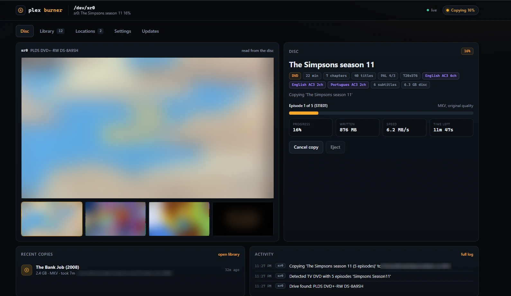

Plex Burner turns the DVD drive in your home server into a ripping station. Insert a disc, check the name, and it lands in your library as an MKV or MP4. The tray opens, and you feed it the next one.

A real TV series DVD being copied, one file per episode. Picture blurred for this page.
Everything a ripping station needs, in a dashboard you open from any browser at home. No desktop software, no command line once it's running.
Reads the title, running time, chapters, audio languages and subtitles as soon as a disc goes in, and suggests a name.
Saves the main film as MKV at original quality with every audio track and subtitle, or as MP4 that plays on anything.
Preview frames straight from the disc before you copy, a live picture while it copies, and frames for everything in your library.
Every DVD drive is found automatically, including USB drives you plug in later. Each one copies in parallel.
Pick a folder per disc or set a default. Browse your server, create folders, and see how many more DVDs will fit.
Leave it alone and it copies with the suggested name after a delay, ejects when done, and waits for the next disc.
Everything in your save locations with preview frames, search and filters, so you can see what you've already copied.
The Updates tab checks GitHub. Press Update and it pulls the new version and restarts itself. It never interrupts a copy.
Five tabs, refreshing live. TV discs are split into episodes and named for your media server automatically. Or open the interactive demo and click around yourself.
On a Linux server with Docker and a DVD drive. Then open http://your-server:9000 from any browser on your network.
Runs in one container. It can only touch your disc drives and the media folders you give it.
Set MEDIA_PATH to the folder your media server reads from. This file is yours: updates never touch it.
The first build takes a few minutes while it installs ffmpeg and the DVD libraries.
Browse to http://<server-ip>:9000, check your save folder on the Locations tab, and insert a disc.
Nothing special: an old optical drive in a home server works perfectly.
Open the Updates tab and click Update now. It installs the new version and restarts itself, but never while a disc is copying. Set AUTO_UPDATE=true to skip the click.
There is no login. Reach it from outside your home over Tailscale or another VPN rather than port forwarding.
Plex Burner is for personal backups of discs you own. Copying encrypted DVDs is allowed in some countries and not others, so check the rules where you live.
Day-to-day options (output format, auto-start, eject, save locations) live in the app. These few start-up options go in .env.
| Variable | Default | What it does |
|---|---|---|
| PORT | 9000 | Port the dashboard listens on. |
| MEDIA_PATH | /srv/media | Your media folder. Plex Burner can browse and save anywhere inside it. |
| EXTRA_PATH | /mnt | A second folder it may use, for extra drives or network shares. |
| PUID / PGID | 1000 / 1000 | Owner given to copied files, so your media server and your user can manage them. |
| DISC_DEVICES | (all drives) | Only use these drives, for example sr0,sr1. |
| UPDATE_CHECK_HOURS | 6 | How often to check GitHub for a new version. |
| AUTO_UPDATE | false | Install new versions automatically when they are released. |
Every release, newest first. Your copy shows when an update is out on its Updates tab.
Loading the changelog...
Free and open source under the MIT licence.